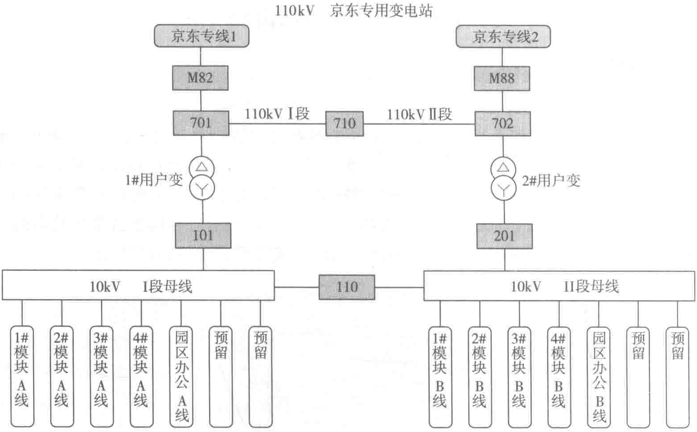
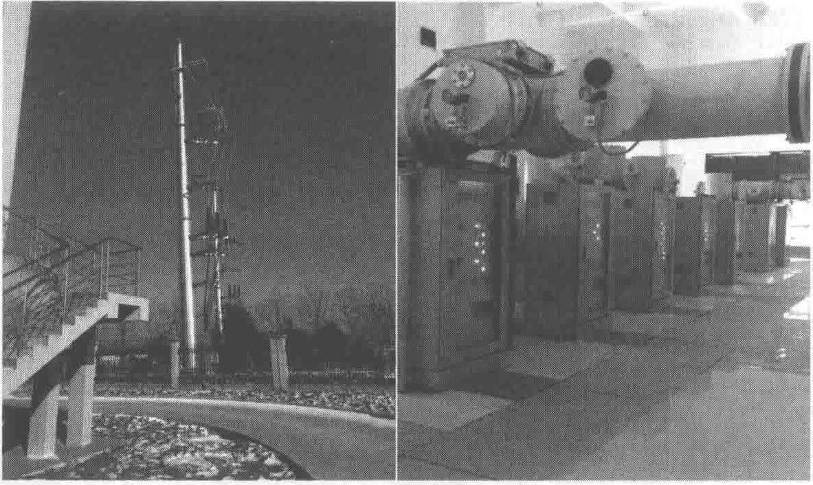

266京东数据中心构建实战图10-4 110kV京东专用变电站供电示意图10-5 110kV京东专用变电站设备当A/B路市电先后同时断电时，并机系统按7+1模式启动运行。当市电发生断电，发电系统自动投入运行，与市电自动切换。当市电恢复，经人工确认后，手动恢复市电供电。当柴油发电系统在得到市电两个不同断电信号后快速启动柴油发电机组，避免发电机组的误启动。在限定时间内发电机组启动并自动合闸负载馈电开关，确保重要负载的紧急供电